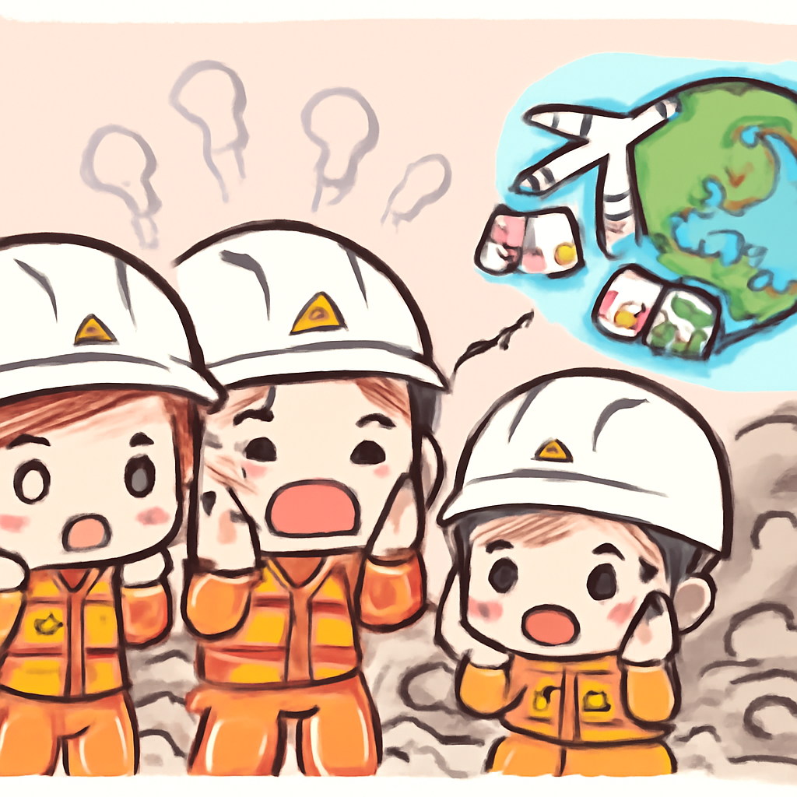

其一 · 以色列耶路撒冷 · 以色列定罪定居者殺害巴勒斯坦人
以色列控告一名定居者殺害巴勒斯坦人，案件引發關注
在以色列耶路撒冷，定居者Yinon Levy因誤殺巴勒斯坦人Odeh Hathaleen，被控過失殺人。這起事件發生在2025年，並引發了對以色列法律系統的關注，因為這是罕見的對以色列人提起的指控。這次控告可能有助於促進更大的正義，但人們也在想，這是否會改變以巴衝突的現狀。
🔗 原始新聞 ↗
2026-08-07 · 以古觀今，以笑抗愁
以色列控告一名定居者殺害巴勒斯坦人，案件引發關注
在以色列耶路撒冷，定居者Yinon Levy因誤殺巴勒斯坦人Odeh Hathaleen，被控過失殺人。這起事件發生在2025年，並引發了對以色列法律系統的關注，因為這是罕見的對以色列人提起的指控。這次控告可能有助於促進更大的正義，但人們也在想，這是否會改變以巴衝突的現狀。
🔗 原始新聞 ↗
烏克蘭軍隊在俄羅斯內部發動攻擊，削弱敵軍資金來源
在烏克蘭基輔，總統宣布對兩個位於俄羅斯境內的油煉廠發動攻擊，目的在於削弱俄國用於資助戰爭的收入。這一舉動顯示了烏克蘭在面對困難時不斷反擊的決心，並可能改變戰爭的經濟格局。希望俄羅斯的油價能像我們的早餐一樣，隨著供應鏈的緊張而上漲。
🔗 原始新聞 ↗
韓國太空機構發布月球影像，記錄太空歷史一刻
在首爾，韓國太空機構分享了其月球探測器拍攝的最新影像，這些影像紀錄了SpaceX火箭的殘骸墜落在月球表面的情形。這不僅是太空探索的新里程碑，也讓我們想起，太空的每一步都可能是一次新的災難，或許下次別再用那麼大的火箭了！
🔗 原始新聞 ↗
Meta被新墨西哥州罰款5.67億美元，涉及兒童安全的重大裁決
在新墨西哥州，Meta因為其社交平台對兒童造成的傷害，被法院判決罰款5.67億美元。這一裁決顯示出社交媒體在保護年輕用戶方面的責任，也提醒大家，Instagram的過濾器可能需要更新，不只是濾掉照片中的瑕疵。
🔗 原始新聞 ↗
委內瑞拉面對地震，政府救援能力受限

在委內瑞拉，兩次強烈地震後，政府向國際社會求助，因為多年來的預算縮減與政治壓制使其救援能力大幅降低。這不僅影響了災後救援的效率，也暴露了政府在危機情況下的脆弱，讓人們不禁想問，這樣的政府能否面對更大的挑戰？
🔗 原始新聞 ↗